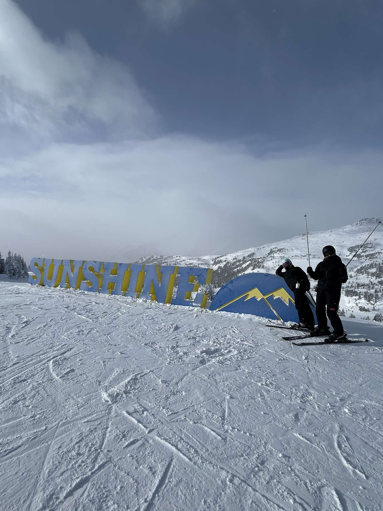
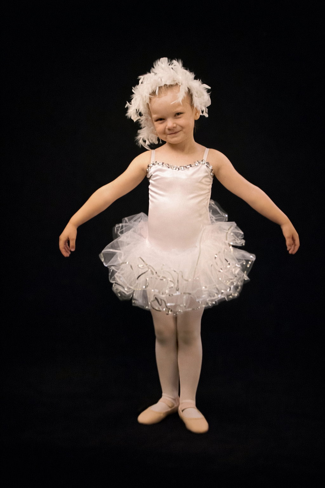

I have 2 labrador retrievers, Tikka and Winnie!
My name is Katie Zbytnuik. I am from Armstrong, British Columbia. I grew up attending school and extra curriculars in Armstrong my entire life. I have 2 older brothers, Brett Zbytnuik and Jordan Zbytnuik, who now live in Calgary as well, and my parents Randy and Joleen Zbytnuik. I grew up travelling to Calgary a lot and I think that is what initially sparked my interest when applying for post-secondary. University of Calgary has a beautiful campus and a great academic reputation especially for my program, Kinesiology. I love to be involved in a variety of different sports and grew up trying them all. Hockey was my winter sport, soccer was my spring sport and gymnastics was my all around sport. These were the only sports I participated in though. Growing up I tried many different sports, as mentioned previously hockey, soccer and gymnastics were my go to's. I also did, flag football, volleyball, basketball, dance, figure skating, and swimming. I am extremly grateful for the opportunity to be able to try a variety of different sports growing. These sports helped to shape who I am today and each one has taught me a valuable lesson. Partcipating in these sports definitely had a role in my decision for choosing to major in kinesiology.


When i'm not studying I am more than likely skiing. I have a season pass at Lake Louise and enjoy skiing on my weekends. I gre up skiing Silverstar Mountain and my first time skiing any other mountain was just last year! I am apart of the U of C ski and bord club as well As the Crochet for Kids club. I just learned to crochet this year and have made a couple of little trinkets. I am apart of an intramural volleyball team and we made our way to 6th place in the playoffs after being in last place all year.

I have 2 labrador retrievers, Tikka and Winnie!

I started dance at 5 years, quit to play hockey and started competing again when I was 13!

I am originally from Armstrong, BC, and moved to Calgary for University in 2024.